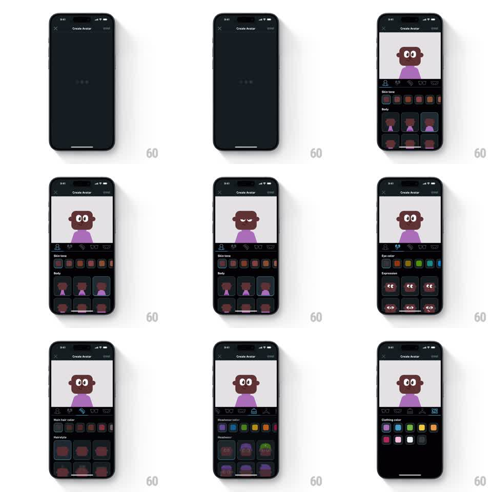

Media
Frame-by-frame

Rebuild this interaction 1:1: Duolingo's avatar builder - a live character preview on top, an icon tab bar of feature categories, and horizontally sliding option panels (skin tone, eyes, hair, headwear, clothing) whose choices update the preview instantly.

Rebuild this interaction 1:1: Duolingo's avatar builder - a live character preview on top, an icon tab bar of feature categories, and horizontally sliding option panels (skin tone, eyes, hair, headwear, clothing) whose choices update the preview instantly.
## Integration
Integration: stack-agnostic spec - springs given as stiffness/damping, timed motions as duration + curve; map every value to your framework and animation library of choice.
## Scene
Dark full-screen page. Top bar: X close, "Create Avatar" title, DONE action. Upper half: avatar preview on a light card - the character reacts and blinks. Below: a row of category icons (body, eyes, hair, glasses, headwear, clothing). Lower half: the active category panel - a color swatch row (e.g. "Skin tone", "Eye color", "Main hair color") above a grid of option tiles ("Body", "Expression", "Hairstyle", "Headwear").
## Motion spec
Pattern: sliding category panels with instant preview updates.
- Switching category tabs slides panels horizontally: outgoing panel exits translateX -30% with opacity to 0 (200ms, ease-in), incoming enters from +30% (250ms, ease-out). Direction follows tab order.
- The active tab icon highlights (color to white + underline, 150ms).
- Tapping any swatch or tile updates the preview immediately - no transition on the change itself; the character's affected region swaps in one frame.
- The preview character idles: blink every 3 to 5 seconds (eyes closed for 120ms) and a gentle bob (translateY +-4px, 2.5s sine).
- Selected options get a bordered highlight (2px accent border, 100ms fade in).
## Calibration
- Instant preview feedback is the core feel - any tween on the avatar itself kills it.
- Panel slides must be short and directional; a long slide makes the builder feel heavy.
## Reduced motion
Panels crossfade (150ms) without horizontal travel; blink and bob off.
## Don't miss
- Color swatches and shape grids are separate rows inside one panel - both belong to the active category.
- DONE lives in the top bar, not the bottom; the bottom half belongs entirely to options.